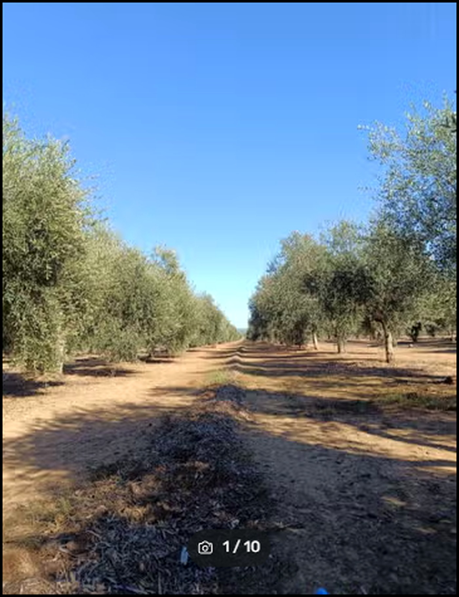
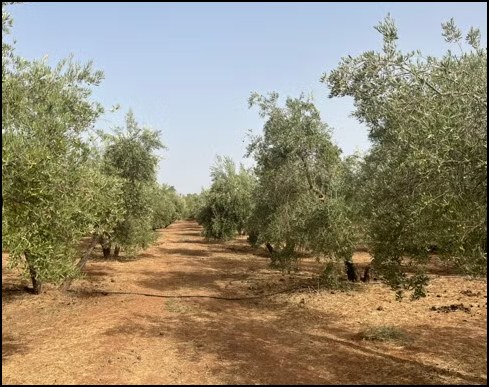
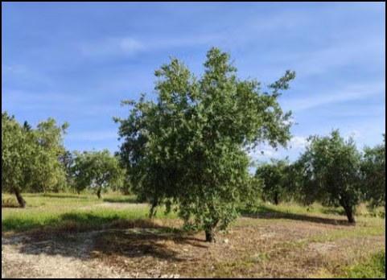

Fotografías de referencia



Las imágenes mostradas son fotografías reales de olivares facilitadas anteriormente para COOINMO y se utilizan aquí como referencia visual del cultivo. No se presentan como fotografías de esta parcela concreta. Se recomienda sustituirlas por fotografías propias de la finca cuando estén disponibles.
Descripción profesional
Se ofrece gran olivar de regadío ubicado en Jaén, en el Polígono 1, Parcela 114, con una superficie de 140.000 m² (14 hectáreas).
La explotación está formada por olivos de un pie, plantados con marco 6 × 8, de variedad Arbequina y una edad aproximada de 15 años.
Cuenta con regadío pagado, instalado y actualmente funcionando, lo que convierte la finca en una explotación preparada para el aprovechamiento agrícola del cultivo.
Asimismo, la información facilitada indica que el olivar está preparado para la recolección con paraguas, facilitando una mecanización orientada a mejorar la eficiencia de la cosecha.
Referencia del anuncio: 546608393.
El precio total de compraventa no se publica porque en los datos facilitados únicamente consta un valor de 3,14 €/m². Las superficies, ubicación parcelaria, situación del regadío y demás extremos deberán comprobarse documentalmente antes de cualquier operación.
Solicitar información a COOINMO